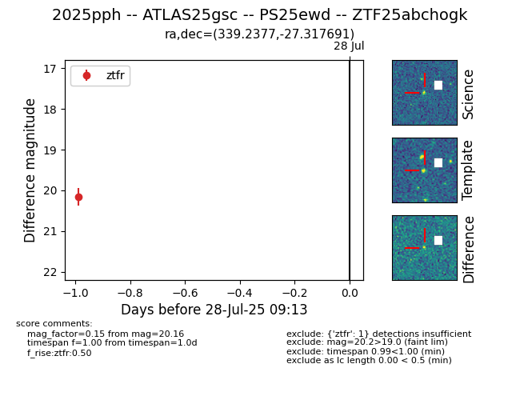

Target 2025pph at 2025-08-19 16:28, see:
FINK: fink-portal.org/ZTF25abchogk
Lasair: lasair-ztf.lsst.ac.uk/objects/ZTF25abchogk
ALeRCE: alerce.online/object/ZTF25abchogk
TNS: wis-tns.org/object/2025pph
YSE: ziggy.ucolick.org/yse/transient_detail/2025pph
alt names
ZTF25abchogk (ztf,fink)
2025pph (tns,yse)
ATLAS25gsc (atlas)
PS25ewd (panstarrs)
coordinates:
equatorial (ra, dec) = (339.2377,-27.31769)
galactic (l, b) = (24.7104,-60.19399)
photometry
last ztfr=20.16
1 ztfr detections
